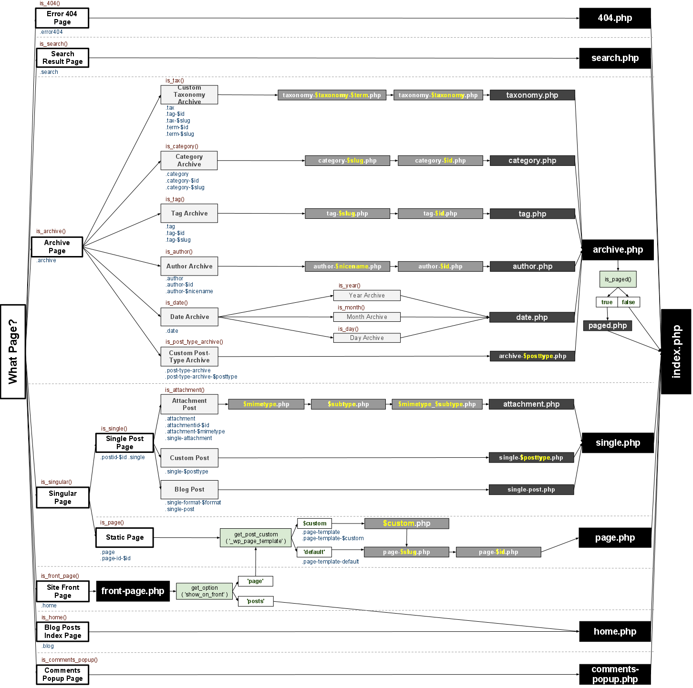

Anatomy of a WordPress theme
Predefined template hierarchy
No defined structure for resources
No (real) container for business logic
Small intro on why we decided to talk about this. Describe the fundamental files of a theme, show the template hierarchy,
show that it is very unflexible (template file paths), messy (effectively two structures: template files + custom files on top)
no separation of view logic and business logic, no common best practices...
The template hierarchy

Why bother?
Fun fact: We're a WordPress agency. That's why.
We have 150+ individual customer solutions based on WordPress. What we want (need!)
is reusability, standards, clean object oriented core, file structures.
Who are we? ->Agency with individual customer solutions based on WordPress
After the twentieth theme, we want (need!) reusability, standards, clean code...
Show the structure of a organized theme (not WordPress-specific) with
loader, theme bussiness logic, views, ressources, vendor libraries, tests
Request lifecycle
Show how WordPress executes a request and what role the theme code plays at
different locations during the execution:
plugins, theme, initalisation, query, template loader
Theme object
Explain the functions.php: PSR-0 class loader, object initalization, convenience
methods: setup(), init(), assets(), admin(), adminAssets(), ...
Views
organize the view files in a meaningfull way: place them where you want,
use existing view "templates" from the WordPress template hierarchy, define your
own views (get_template_part). Show the clean code from a view with only view code
(i.e. only the loop and html), access theme object from a private object context, ...
Resolve the problem: "a bunch of files in the theme root"
Resources
organize your static/client resources separately: css, js, language files, images, ...
separatation of concerns
Good to go: basic theme
Now you could use a twig loader and you wouldn't need to touch any PHP again
(only write HTML with Twig, CSS and JS)
Component-based theme extensions
How to extend the theme with custom functionalities
(where no suitable/satisfying plugins exist)
discuss the component based approach, explain the advanteges of namespacing,
OOP encapsulation, write clean code (small classes, that do one thing, but one thing well)
Examples
ENSI (with screenshots?): Technical Forum, Topics, Documents, Menus, Page Templates, ...
ENSI-Rat: child theme
StepChallenge: Application build on top of WordPress with all relevant application code in theme
Outlook: Tests, dependencies
Now that we have small, well-structured units of code: we can test them... ->behat, phpunit, selenium, ....
WordPress Core dependencies should be wrapped, plugin/library dependencies should be available from a service container